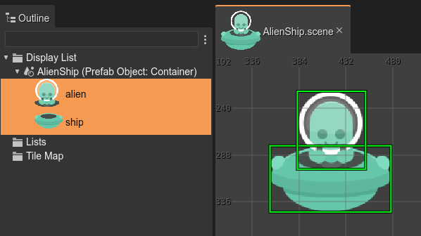
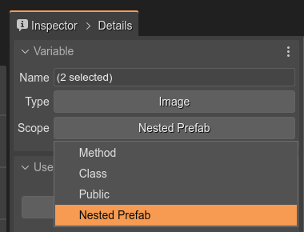
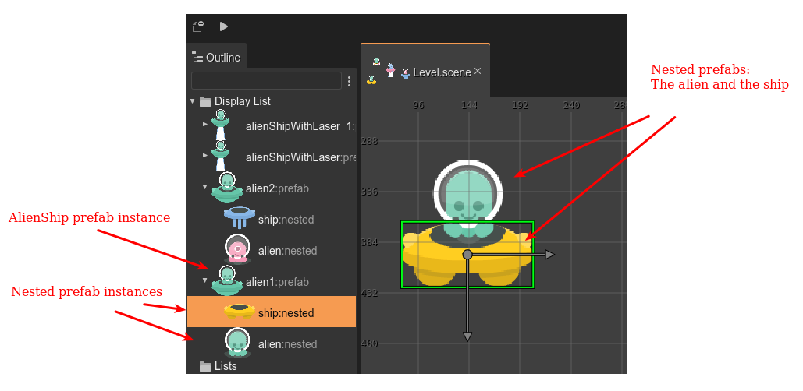
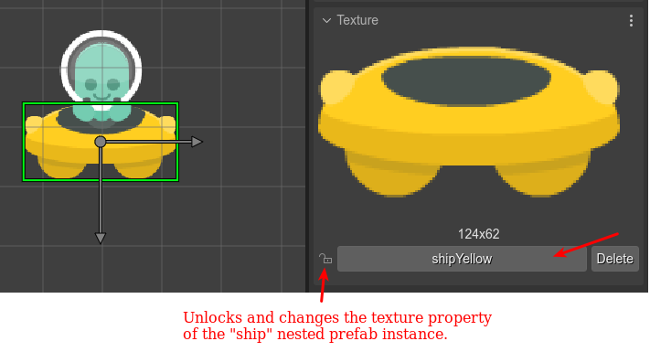

Nested prefabs
The nested prefab is a powerful concept. Like the overall prefab concept, it is inspired by Unity Engine. Its name describes its purpose: allow nesting prefabs.
There are many cases where your prefab is a compound of objects, and you would like to modify them in prefab instances. For example, look at this AlienShip prefab:
It is a container, with an alien and a ship children.
When you create an instance of the AlienPrefab (that is an instance of a container), you can change its position, its scale. It’s custom properties. But you cannot change the properties of the ship or the alien children.
But if you declare the alien and ship objects as nested prefab, you can access them in the prefab instance.
For setting an object as nested prefab, you select the Nested Prefab option in the Scope parameter of the Variable section:
Variables with a Nested Prefab scopes are generated in code as public fields. It is like the Public scope but allowing to modify the object in prefab instances.
Nested prefab instances
When you create an instance of a prefab that contains nested prefabs, the Outline view shows the nested prefabs. Also, the Scene Editor allows selecting the nested prefab instance:
Note the nested prefab instance ship of the AlienShip’s prefab instance, has a different texture. Nested prefab instances work just like prefab instances: for changing a property, it first requires unlocking the property:
The code generated for the alien1 object is like this:
// alien1
const alien1 = new AlienShip(this, 142, 398);
this.add.existing(alien1);
alien1.ship.setTexture("shipYellow");
Note the nested prefab instance ship is a field of the prefab instance alien1.
Things you cannot do with nested prefab instances
In practice, nested prefabs are like prefabs, with certain differences:
(Remember a prefab is a type, a template, and a prefab instance is the realization of the prefab in the scene)
In code, a prefab is a user JavaScript class. A nested prefab is part of a prefab. It is an object referenced by a prefab class field.
You cannot define user properties for a nested prefab (check the comment below).
You cannot delete a nested prefab instance.
You cannot change the type of a nested prefab instance.
A nested prefab is an object that is part of a prefab. Its type can be a built-in Phaser type or a prefab. You cannot define user properties for the nested prefab if it has a Phaser built-in type. But, if it has a prefab as a type, you can define user properties for that prefab. Saying it in other words. If you need to add custom properties to a nested prefab (A), then you can create a separated prefab scene (B) with user properties, and use that prefab B as type creating the nested prefab A.